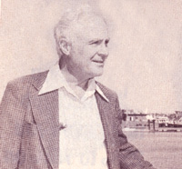
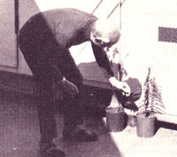
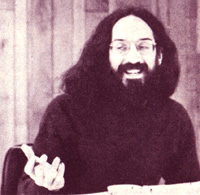

Newsworthies
Selected doin's of well-known Mother-types from around the world: Harold Wilcox, Dr. Melvin Calvin and Gil Friend
By the Mother Earth News editors
March/April 1977
Unlike the Japanese-who consume more than 100 million pounds of the substance each year-Americans currently eat little (if any) seaweed. That situation may change within the next decade, however, if a man by the name of HAROLD WILCOX has his way.
Wilcox-an environmental scientist who has taught at Berkeley and Harvard-is presently the head of the Ocean Food and Energy Farm Project at the Naval Under-sea Center in San Diego, California, where he works on the development of various types of anchored and free-floating ocean farms. His goal: to have a 1,000-acre seaweed farm in operation by 1985 ... and a 100,000-acre "spread" five years after that.
Wilcox believes not only that seaweed can help solve our present world food shortages, but that large-scale farming of the ocean may actually reduce the ocean's temperature and thus counteract the dangerous tendency of industrialization to raise the earth's temperature (and melt the polar icecaps) ... a phenomenon Harold Wilcox discusses at length in his book Hot-House Earth (Praeger, 1975). In addition, the large-scale cultivation and processing of kelp could-the scientist reasons-yield an abundance of useful algal by-products, such as waxes, lubricants, plastics, pharmaceuticals, fertilizers, and (possibly) fuels.
Dr. Wilcox is particularly excited about the properties and potential of the giant brown kelp species (with which he now works exclusively). "What other vegetable can you think of," he asks, "that grows up to two feet per day, attains a final length of two hundred feet, and never needs 'watering'?"- Peter Blazi.
DR. MELVIN CALVIN
Sometime in the not-so-distant future, gopher weed and milkweed may be major U.S. crops. Only these plants won't be grown for food ... they'll be cultivated for use as fuel.
As part of his ongoing "solar energy" research at the University of California's Berkeley campus, DR. MELVIN CALVIN-winner of the 1961 Nobel Prize in chemistry-has been searching for a plant from which petroleum substitutes (or supplements) can be extracted. And it appears that he's found what he's been looking for in various members of the milkweed family.
According to Dr. Calvin, hydrocarbon molecules (not unlike the molecules found in petroleum) account for up to 60% of the latex (white juices) of these plants. Furthermore, the Nobel laureate estimates that-given current extraction procedures-somewhere between five and twenty-five barrels of "oil" can be harvested from an acre of milkweed, possibly at a cost competitive with that of imported crude.
Dr. Calvin is presently raising various milkweed species atop the Biodynamics building at U.C. Berkeley, and is attempting to get a few acres of land at the U.C. Davis campus on which he can grow largescale experimental plantings.
In addition, Dr. Calvin has reportedly discussed his ideas with Brazilian officials, and Petrobras-the Brazilian national petroleum company-is said to be studying the milkweeds-into-crude-oil concept now.- Raymond H. Clark.
GIL FRIEND
Some folks dash around the country with such blinding speed, take on (and complete) so many special projects, and - in general - do so much so fast... that it's danged difficult to keep up with 'em.
Take GIL FRIEND (of the Washington-based Institute for Local Self-Reliance), for instance. Since he appeared in the Plowboy Interview in MOTHER NO. 36 some sixteen months ago, Gil has (among other things):
Lectured at numerous institutions around the U.S., including Princeton University, Goddard College in Vermont, and Washington's Institute for Policy Studies ...
Designed-with Chris Mendosa-a rooftop greenhouse (now being used in hydroponics research) for the garden atop the Institute for Local Self-Reliance headquarters building ...
Served as a consultant to the Bronx Frontiers Development Corporation, in which capacity he helped develop a plan to reclaim vacant South Bronx lots using compost made from vegetable wastes obtained from New York City's wholesale produce depot ...
And investigated the effect of air pollution on urban garden vegetables. "I presented a paper on this topic at the February 1976 Annual Meeting of the American Association for the Advancement of Science," Gil recalls. "My conclusions-brief ly-are that the problem is location-specific, requiring local testing ... that people should use common sense and not grow gardens near heavily traveled roads, factories, and so forth (Just as, of course, they should wash produce thoroughly before they eat it) ... and that if city air is too dirty to grow food, the solution is not to stop growing food but to clean up the air!" (For more details, consult the ILSR report entitled "Poisoned Cities & Urban Gardens", available for 5 cents from the Institute for Local Self-Reliance, 1717 18th St. N. W., Washington, D. C. 20009.-MOTHER.)
At present, Gil is in Berkeley, California (on a leave of absence from the ILSR) working toward a Master of Science degree in Ecosystem Management in a program jointly administered by the Farallones Institute and Antioch College/West. "My major activity for 1977," the indefatigable Friend announces, "will be to study agricultural ecology and integrated pest management, though-of course-I'll still work with the Institute for Local Self-Reliance on selected projects, and continue to speak and write about food, agricultural policy, 'appropriate technology', and social change."
Are you up on the latest doings of someone (such as any of the innovative pioneers featured in MOTHER'S Plowboy Interviews) who's achieved recognition in a field regularly covered by this magazine? If so, send us a tightly written 200-word report on that person (along with a snappy black-and-white photograph), and-providing your report is used in NEWSWORTHIES-we'll gladly send you a flat $50 ($25 without the photo). Send contributions to NEWSWORTHIES Editor, THE Mother Earth News(restricted) P.O. Box 70, Hendersonville, N.C. 28739.
 |
 |
 |
|
 |
|
|